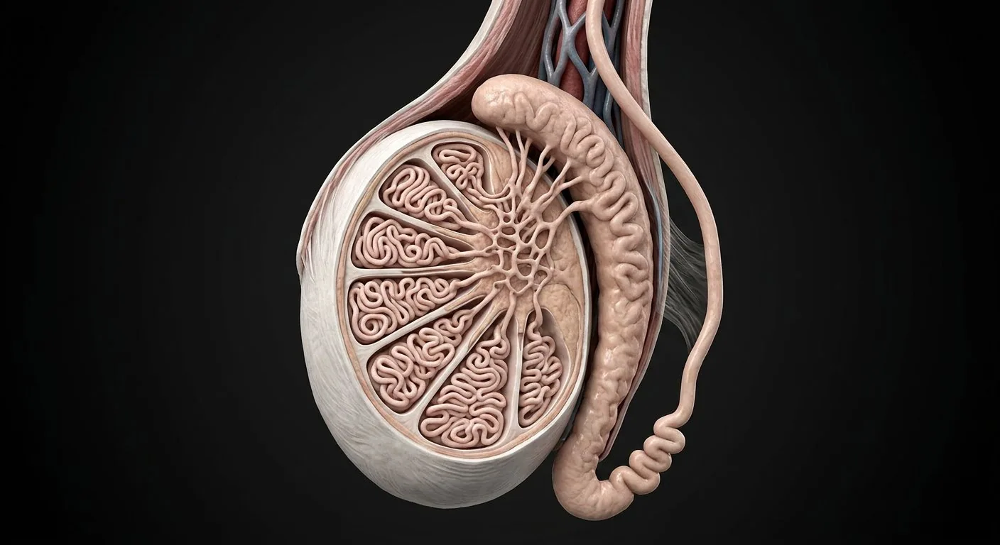

ORGAN → UNDER THE LENS
Seminiferous tubule epithelium
Tap to compare the organ region with a tissue-level teaching illustration.
Read about Seminiferous tubules ↓The sperm-production organ from tunica through seminiferous tubule to rete, efferent ducts and epididymal tail.

Tunica albugineaSertoli cells / blood–testis barrierTunica vaginalisTesticular lobulesSeminiferous tubulesCremaster muscle & fasciaPampiniform venous plexusEpididymal headEfferent ductulesVas deferensMediastinum testisRete testisEpididymal bodyLeydig cellsEpididymal tailA realistic cut section maps the invisible seminiferous loops, blood–testis barrier and sperm outflow route.
These are educational cutaways, not literal magnifications of an organ pixel or laboratory slides. A ring marks the approximate tissue region; part-specific lines appear only where identifiable.
Tap to compare the organ region with a tissue-level teaching illustration.
Read about Seminiferous tubules ↓These 15 structures describe anatomy related to the chapter’s regional illustration. Each entry separates location, function and a clinical point.
Serous covering with visceral and parietal layers.
What it doesAllows mobile testis within scrotum.
Clinical connectionFluid accumulation in the cavity forms a hydrocele.
Dense white capsule under tunica vaginalis.
What it doesPartitions testis into lobules via septa.
Clinical connectionTraumatic rupture may require urgent evaluation.
Posterior thickening of albuginea containing rete testis.
What it doesOrganizes lobules and duct outflow.
Clinical connectionImportant landmark in testicular ultrasound.
Septa divide testis into lobules containing seminiferous tubules.
What it doesCompartmentalize sperm production.
Clinical connectionGerm-cell tumors often distort intratesticular architecture.
Coiled tubules lined by developing germ cells and Sertoli cells.
What it doesSpermatogenesis.
Clinical connectionTubular atrophy reduces fertility.
Supportive epithelium joined by tight junctions.
What it doesNurse developing germ cells; secrete inhibin B.
Clinical connectionBarrier limits immune exposure to postmeiotic germ cells.
Endocrine cells in interstitium between tubules.
What it doesMake testosterone in response to LH.
Clinical connectionLH deficiency lowers intratesticular testosterone.
Channels within mediastinum draining straight tubules.
What it doesCollect sperm from seminiferous system.
Clinical connectionObstruction can impair outflow.
Small ducts from rete to epididymal head.
What it doesMove sperm and resorb much tubular fluid.
Clinical connectionMay be involved in obstructive infertility.
Enlarged superior epididymis receiving efferent ductules.
What it doesStarts sperm maturation.
Clinical connectionEpididymitis often causes tender swelling.
Long single coiled epididymal duct along posterior testis.
What it doesMatures and transports sperm.
Clinical connectionCan be palpated separately from testis.
Inferior storage region leading into vas deferens.
What it doesStores mature sperm.
Clinical connectionVasectomy interrupts downstream transport.
Thick smooth-muscle duct ascending in spermatic cord.
What it doesPropels sperm by peristalsis during emission.
Clinical connectionPalpable cord structure; vasectomy divides it.
Venous network around spermatic cord artery.
What it doesCountercurrent heat exchange.
Clinical connectionVenous dilation is a varicocele.
Skeletal muscle fibers accompanying cord and testis.
What it doesRaises testis through cremasteric reflex.
Clinical connectionReflex assessment helps localize neurologic problems.
These 5 additional entries give anatomical context. They are deliberately not assigned a photographic pin on the regional image.
Short connecting segments between coiled seminiferous tubules and rete testis.
What it doesMove sperm and luminal fluid toward rete.
Clinical connectionOutflow blockage can cause upstream dilation.
Basement membrane surrounding seminiferous epithelium and peritubular cells.
What it doesSupports germ and Sertoli cell arrangement.
Clinical connectionRemodels in some infertility disorders.
Basal germ cells next to tubular basement membrane.
What it doesBegin spermatogenic lineage by division.
Clinical connectionGerm-cell depletion impairs sperm production.
Meiotic germ cells moving toward adluminal compartment.
What it doesUndergo first meiotic division.
Clinical connectionTypically prominent in active seminiferous tubules.
Postmeiotic haploid cells undergoing head and flagellum remodeling.
What it doesBecome spermatozoa after spermiogenesis.
Clinical connectionMaturation abnormalities affect sperm morphology.
Short answers grounded in the structures described above. Use the illustrated guide for anatomical context.
Sperm develop within seminiferous tubules. Supporting Sertoli cells and hormone-producing interstitial Leydig cells occupy different microscopic compartments.
They move from seminiferous tubules through a collecting network and efferent ductules into the epididymis, where maturation and storage continue.
Serous covering with visceral and parietal layers. Function: Allows mobile testis within scrotum.
Posterior thickening of albuginea containing rete testis. Function: Organizes lobules and duct outflow.
Function: Spermatogenesis. Coiled tubules lined by developing germ cells and Sertoli cells.
Follow these connected structures and body systems in the illustrated atlas.
 Sperm cell · anatomy & productionA separate sperm chapter: head, midpiece, flagellum, meiosis, Sertoli support and epididymal maturation.↗
Sperm cell · anatomy & productionA separate sperm chapter: head, midpiece, flagellum, meiosis, Sertoli support and epididymal maturation.↗ Male reproductive systemSperm production in the scrotum, maturation in the epididymis, and a shared exit with urine.↗
Male reproductive systemSperm production in the scrotum, maturation in the epididymis, and a shared exit with urine.↗ Prostate, ducts & penisProstatic zones and the urinary–ejaculatory crossing: urethra, verumontanum, ducts, seminal vesicles and erectile bodies.↗
Prostate, ducts & penisProstatic zones and the urinary–ejaculatory crossing: urethra, verumontanum, ducts, seminal vesicles and erectile bodies.↗ Male pelvis & perineumThe male pelvic floor in sagittal section: bladder, prostate and urethra in front, rectum and anal canal behind, and the muscular sheet that holds them up.↗
Male pelvis & perineumThe male pelvic floor in sagittal section: bladder, prostate and urethra in front, rectum and anal canal behind, and the muscular sheet that holds them up.↗General anatomy references and related source chapters for continued study. These links do not make the digital illustrations clinical images or certify every anatomical variant.
This educational page is not medical advice and has not undergone formal clinical peer review. Spotted an error? Contact the editor.
Open the realistic interactive plate, label lines, focus view and self-test.